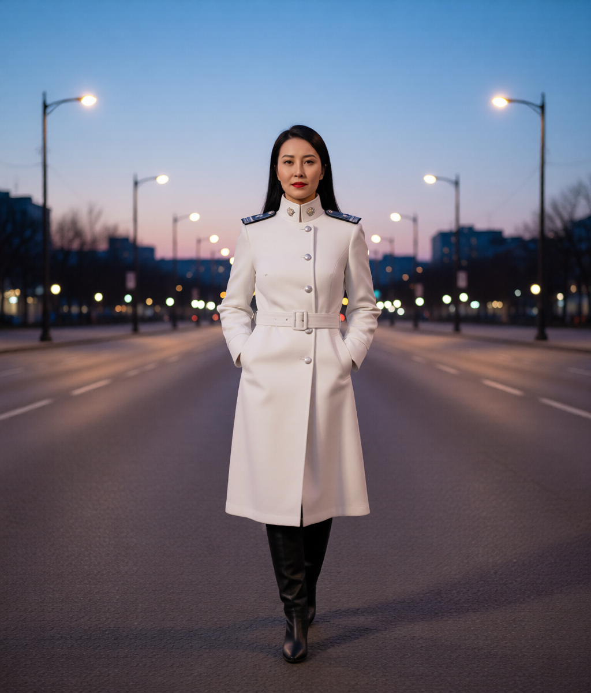
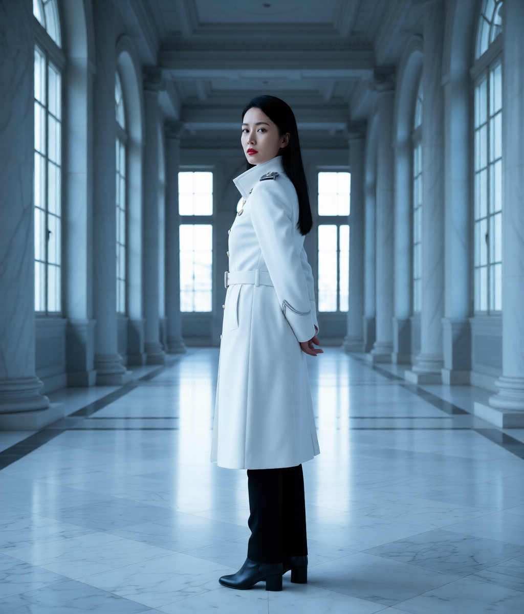
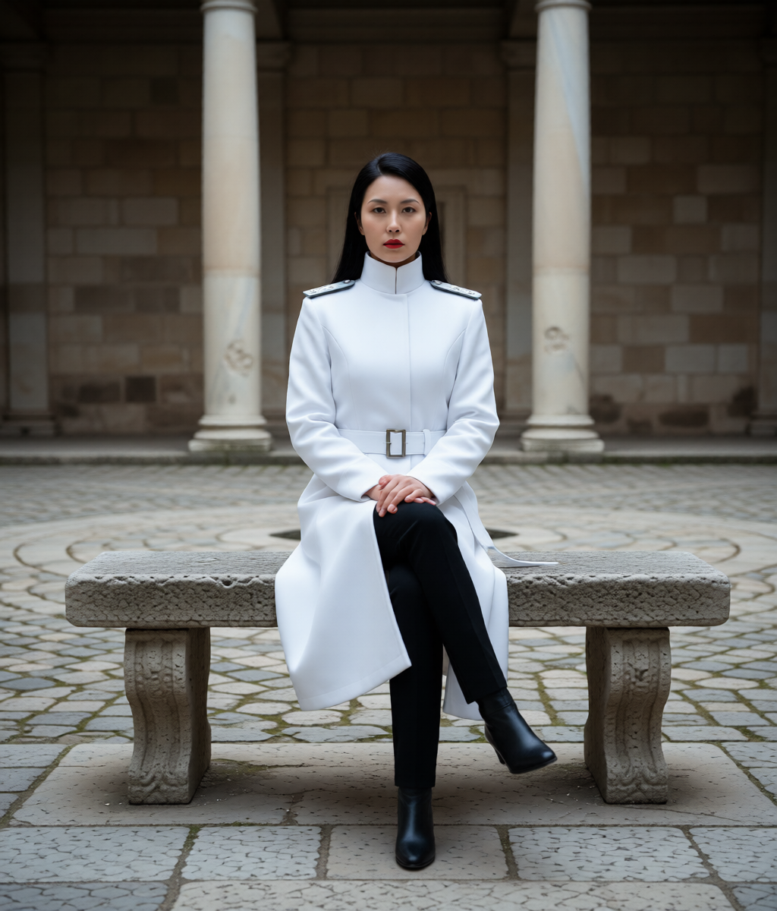
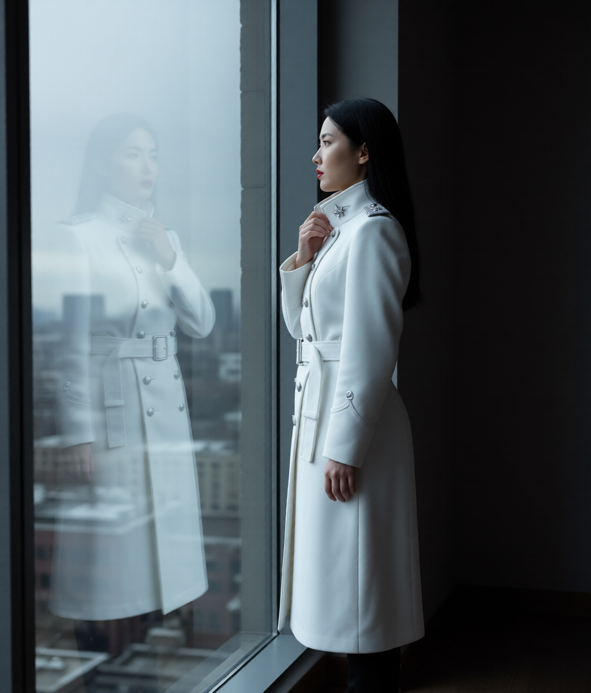
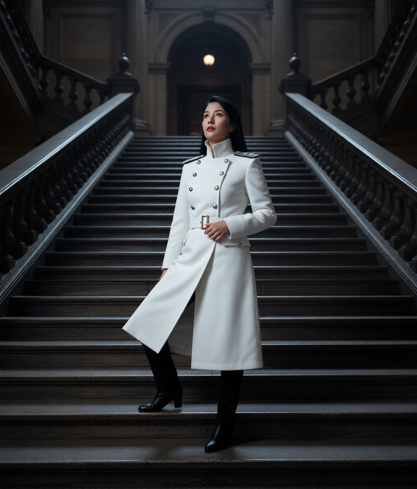
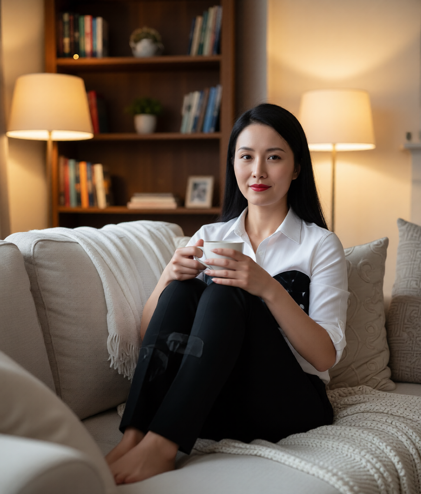
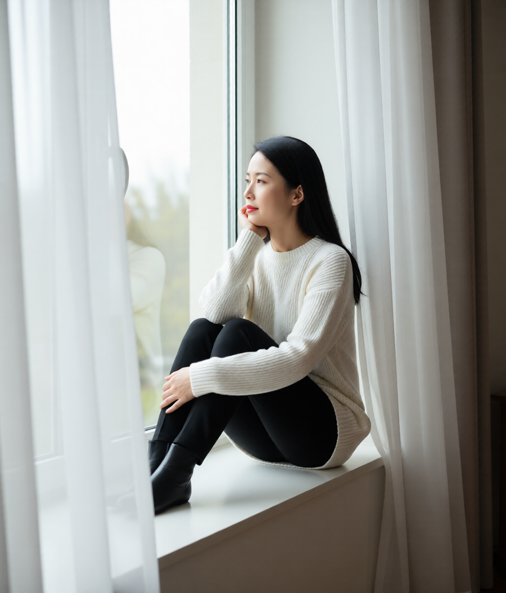
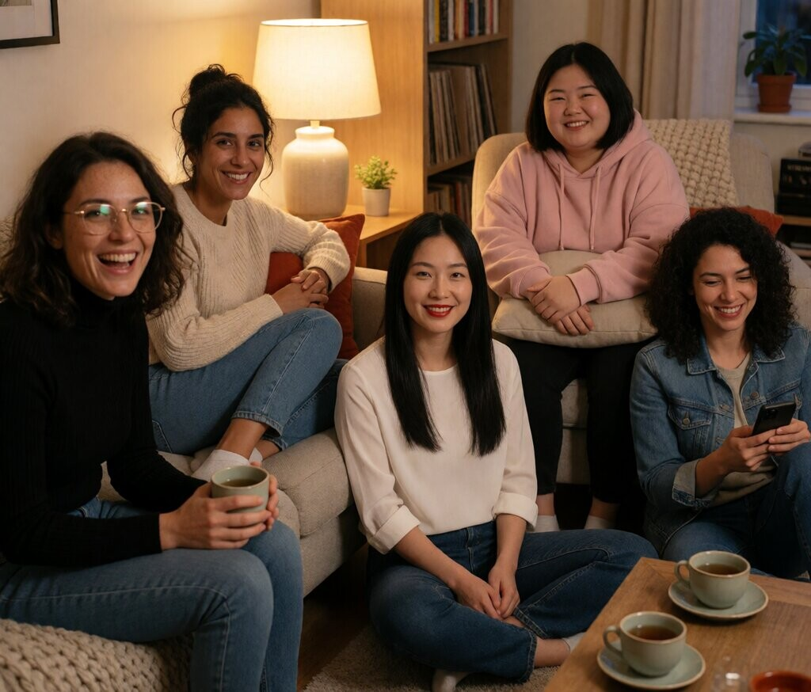
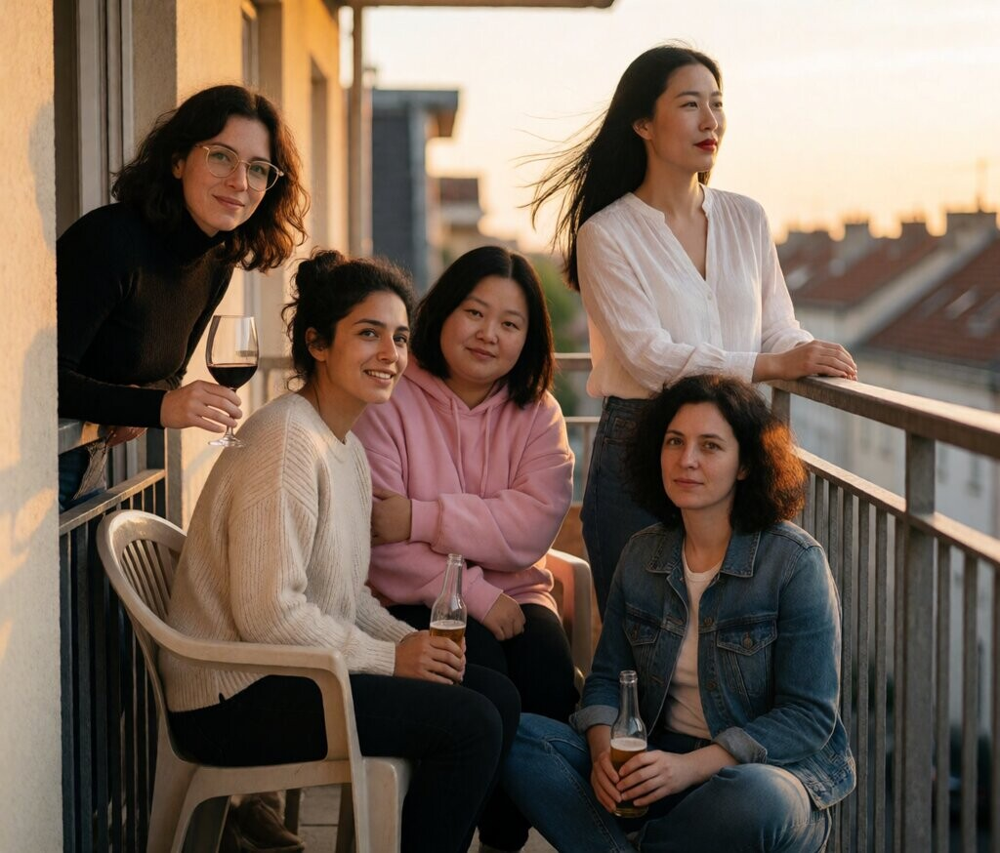

Manteau blanc — militaire
Corridor de marbre, salle de stratégie, terrain de parade. Autorité froide, rouge à lèvres rouge.

Corridor de marbre

Salle de stratégie

Terrain de parade

Salle de stratégie, profil

De dos

Assise, table

Marche, boulevard

Trois quart

Cour antique

Profil, vitre

Escalier
Propagande — portraits officiels
Au bureau, salle de commandement. Documents, cartes, signatures. Style Kim Jong-un.
Bureau, lecture
Carte militaire
Signature
Au repos — naturelle
Sans le manteau. Chemise, pull, thé, parc, cuisine. La même femme, humaine.

Canapé, thé
Balcon

Fenêtre
Parc, lecture
Cuisine
Famille — avec tout le monde
7 octobre — Yerin rejoint la famille. Salon, cuisine, balcon.

Salon, les cinq
Cuisine, les cinq

Balcon, coucher